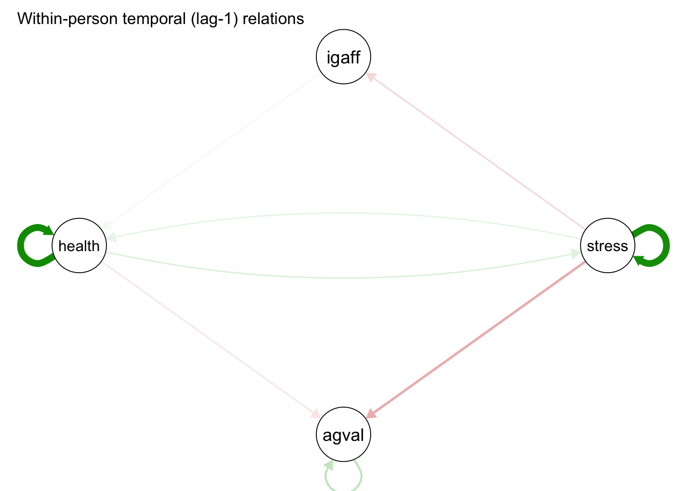
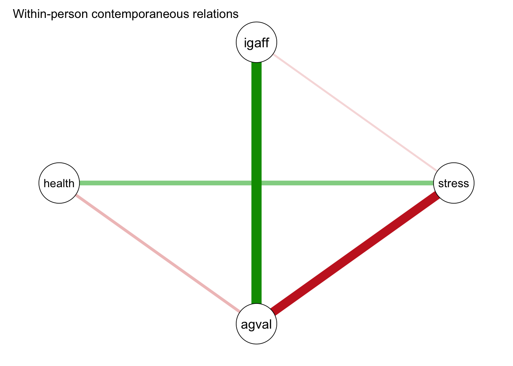
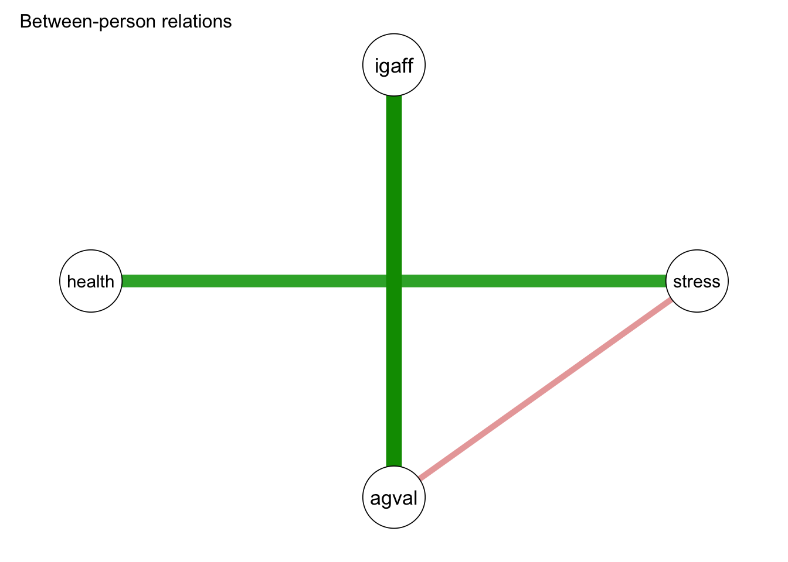

15.5 Applied Example
15.5.1 Loading Data
For the multi-level VAR example we will use the AMIB data available on the QuantDev server. Here, subjects provided self-report data eight times per day, for 21 days, on average. Variable included in the dataset are listed below.
id: person indexday: time indices (1-21)interaction: (1-168)igaff: interpersonal affectionigdom: interpersonal dominanceagval: affect valenceagarous: affect arousalstress: stresshealth: self-reported health[reverse coded]
Let’s take a look at the health,stress, affect valence and interpersonal affection variables.
filepath <- "https://quantdev.ssri.psu.edu/sites/qdev/files/AMIBshare_phase2_interaction_2019_0501.csv"
#read in the .csv file using the url() function
AMIB_interactionP2 <- read.csv(file=url(filepath),header=TRUE)
#subsetting to vaiables of interest
AMIB_interactionP2 <- AMIB_interactionP2[ ,c("id","day","health","interaction",
"igaff","stress","agval")]
describe(AMIB_interactionP2)## vars n mean sd median trimmed mad min max range skew
## id 1 4200 310.36 77.12 321 308.40 121.57 203 439 236 0.07
## day 2 4200 10.57 5.99 10 10.50 7.41 1 21 20 0.09
## health 3 4192 1.08 1.17 1 0.93 1.48 0 5 5 0.88
## interaction 4 4200 73.88 45.18 71 72.32 54.86 1 168 167 0.23
## igaff 5 4190 7.39 1.78 8 7.69 1.48 1 9 8 -1.43
## stress 6 4191 1.22 1.38 1 1.02 1.48 0 5 5 0.97
## agval 7 4189 6.80 2.09 7 7.08 2.22 1 9 8 -0.93
## kurtosis se
## id -1.21 1.19
## day -1.16 0.09
## health 0.00 0.02
## interaction -1.00 0.70
## igaff 2.01 0.03
## stress 0.02 0.02
## agval 0.13 0.03#plotting intraindividual change
ggplot(data = AMIB_interactionP2,
aes(x = interaction, group= id)) +
#first variable
geom_line(aes(y=igaff), color=1) +
geom_line(aes(y=agval), color=2) +
geom_line(aes(y=health), color=3) +
geom_line(aes(y=stress), color=5) +
#plot layouts
scale_x_continuous(name="Interaction#") +
scale_y_continuous(name="Raw Values") +
theme_classic() +
theme(axis.title=element_text(size=14),
axis.text=element_text(size=14),
plot.title=element_text(size=14, hjust=.5)) +
facet_wrap(~id, ncol=2) +
ggtitle("AMIB Phase 2 Data (6 vars)")
Now, let’s fit our model in the mlVAR package as follows:
library("mlVAR")
mlvar_all <- mlVAR(
data = AMIB_interactionP2,
vars = c("igaff", "stress", "agval", "health"),
idvar = "id",
lags = 1,
dayvar = "day"
)## 'estimator' argument set to 'lmer'## 'temporal' argument set to 'correlated'## 'contemporaneous' argument set to 'correlated'## Estimating temporal and between-subjects effects##
|
| | 0%
|
|================== | 25%
|
|=================================== | 50%
|
|==================================================== | 75%
|
|======================================================================| 100%## Estimating contemporaneous effects##
|
| | 0%
|
|================== | 25%
|
|=================================== | 50%
|
|==================================================== | 75%
|
|======================================================================| 100%## Computing random effects##
|
| | 0%
|
|== | 3%
|
|===== | 7%
|
|======= | 10%
|
|========= | 13%
|
|============ | 17%
|
|============== | 20%
|
|================ | 23%
|
|=================== | 27%
|
|===================== | 30%
|
|======================= | 33%
|
|========================== | 37%
|
|============================ | 40%
|
|============================== | 43%
|
|================================= | 47%
|
|=================================== | 50%
|
|===================================== | 53%
|
|======================================== | 57%
|
|========================================== | 60%
|
|============================================ | 63%
|
|=============================================== | 67%
|
|================================================= | 70%
|
|=================================================== | 73%
|
|====================================================== | 77%
|
|======================================================== | 80%
|
|========================================================== | 83%
|
|============================================================= | 87%
|
|=============================================================== | 90%
|
|================================================================= | 93%
|
|==================================================================== | 97%
|
|======================================================================| 100%Note, the dayvar argument is simply used to ensure the first measurement of a day is not regressed on the last measurement of the previous day. This argument should only be included in your model if there are multiple observations per day.
Let’s take a look at our results:
summary(mlvar_all)##
## mlVAR estimation completed. Input was:
## - Variables: igaff stress agval health
## - Lags: 1
## - Estimator: lmer
## - Temporal: correlated
##
## Information indices:
## var aic bic
## igaff 9535.037 9683.264
## stress 6582.570 6730.796
## agval 8784.998 8933.225
## health 5750.630 5898.856
##
##
## Temporal effects:
## from to lag fixed SE P ran_SD
## igaff igaff 1 0.047 0.026 0.069 0.087
## igaff stress 1 0.024 0.020 0.239 0.077
## igaff agval 1 -0.015 0.019 0.432 0.041
## igaff health 1 0.029 0.011 0.009 0.008
## stress igaff 1 -0.078 0.023 0.001 0.032
## stress stress 1 0.641 0.042 0.000 0.209
## stress agval 1 -0.175 0.031 0.000 0.123
## stress health 1 0.056 0.016 0.001 0.050
## agval igaff 1 -0.013 0.025 0.595 0.064
## agval stress 1 0.027 0.016 0.103 0.036
## agval agval 1 0.138 0.032 0.000 0.125
## agval health 1 0.005 0.014 0.705 0.025
## health igaff 1 -0.008 0.030 0.793 0.106
## health stress 1 0.073 0.020 0.000 0.069
## health agval 1 -0.054 0.026 0.038 0.088
## health health 1 0.653 0.038 0.000 0.186
##
##
## Contemporaneous effects (posthoc estimated):
## v1 v2 P 1->2 P 1<-2 pcor ran_SD_pcor cor ran_SD_cor
## stress igaff 0.022 0.127 -0.054 0.081 -0.251 0.146
## agval igaff 0.000 0.000 0.413 0.154 0.471 0.154
## agval stress 0.000 0.000 -0.353 0.150 -0.441 0.169
## health igaff 0.851 0.967 0.002 0.015 -0.101 0.122
## health stress 0.000 0.001 0.177 0.210 0.244 0.219
## health agval 0.000 0.000 -0.098 0.068 -0.200 0.145
##
##
## Between-subject effects:
## v1 v2 P 1->2 P 1<-2 pcor cor
## stress igaff 0.637 0.215 0.140 -0.386
## agval igaff 0.000 0.000 0.739 0.804
## agval stress 0.045 0.239 -0.251 -0.531
## health igaff 0.446 0.454 -0.126 -0.485
## health stress 0.000 0.000 0.587 0.706
## health agval 0.532 0.384 -0.123 -0.56915.5.2 Temporal Effects
Temporal effects:
from to lag fixed SE P ran_SD
igaff agval 1 -0.015 0.019 0.432 0.041
igaff health 1 0.029 0.011 0.009 0.008
stress igaff 1 -0.078 0.023 0.001 0.032
stress health 1 0.056 0.016 0.001 0.050
agval stress 1 0.027 0.016 0.103 0.036
agval agval 1 0.138 0.032 0.000 0.125
agval health 1 0.005 0.014 0.705 0.025For the prototypical person, only affect valence exhibited an autoregressive effect, meaning affect valence tended to persist over time. In addition, affect valence appears to have a small time-dependent deleterious effect on stress levels and health. Likewise, stress appears to have a deleterious effect on health and interpersonal affection. On the other hand, interpersonal affection tended to have a buffering effect on affect valence and health.
# Plot temporal relations:
plot(
mlvar_all, "temporal",
title = "Within-person temporal (lag-1) relations",
layout = "circle",
nonsig = "hide"
)
15.5.3 Contemporaneous Effects
Contemporaneous effects (posthoc estimated):
v1 v2 P 1->2 P 1<-2 pcor ran_SD_pcor cor ran_SD_cor
stress igaff 0.022 0.127 -0.054 0.081 -0.251 0.146
agval igaff 0.000 0.000 0.413 0.154 0.471 0.154
agval stress 0.000 0.000 -0.353 0.150 -0.441 0.169
health igaff 0.851 0.967 0.002 0.015 -0.101 0.122
health stress 0.000 0.001 0.177 0.210 0.244 0.219
health agval 0.000 0.000 -0.098 0.068 -0.200 0.145For the prototypical person, contemporaneous stress levels and affect valence were negatively correlated, while interpersonal affection and affect valence were positive correlated.
plot(mlvar_all,
"contemporaneous",
title = "Within-person contemporaneous relations",
layout = "circle",
nonsig = "hide"
)
15.5.4 Between-Subjects Effects
Between-subject effects:
v1 v2 P 1->2 P 1<-2 pcor cor
stress igaff 0.637 0.215 0.140 -0.386
agval igaff 0.000 0.000 0.739 0.804
agval stress 0.045 0.239 -0.251 -0.531
health igaff 0.446 0.454 -0.126 -0.485
health stress 0.000 0.000 0.587 0.706
health agval 0.532 0.384 -0.123 -0.569plot(mlvar_all,
"between",
title = "Between-person relations",
layout = "circle",
nonsig = "hide"
)
In the between-subjects network, we see a strong relationship between interpersonal affection and affect valence, meaning people who, on average, felt more interpersonal affection felt, on average, more affect valence. In addition we see people who, on average, felt more stressed also felt, on average, less health. Furthermore, we see a small negative between-person association between stress and emotional valence, with those who on average felt more stressed, feeling less emotional valence.